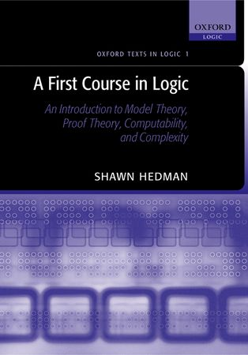

Hedman: A First Course in Logic

Shawn Hedman’s A First Course in Logic (OUP, 2004: pp. xx+214) is subtitled ‘An Introduction to Model Theory, Proof Theory, Computability and Complexity’. So there’s no lack of ambition in the coverage! And I do really like the general tone and approach at the outset. So I wish I could be more enthusiastic about the book in general.
But, as we will see, this book is decidedly patchy both in terms of the level of the treatment of various topics, and in terms of the quality of the exposition, and only parts of it can really be recommended.
Some details After twenty pages of mostly rather nicely done ‘Preliminaries’ – including an admirably clear couple of pages the P = NP problem, Ch. 1 is on ‘Propositional Logic’. On the negative side, we could certainly quibble that Hedman is a bit murky about object-language vs meta-language niceties. The treatment of induction half way through the chapter isn’t as clear as it could be. Much more importantly, the chapter offers a particularly ugly formal deductive system. It is in fact a (single conclusion) sequent calculus, but with proofs constrained to be a simple linear column of wffs. So – heavens above! – we are basically back to Lemmon’s Beginning Logic (1965). Except that the rules are not as nice as Lemmon’s (thus Hedman’s ∧-elimination rule only allows us to extract a left conjunct; so we need an additional ∧-symmetry rule to get from P ∧ Q to Q). I can’t begin to think what recommended this system to the author out of all the possibilities on the market. On the positive side, there’s quite a nice treatment of a resolution calculus for wffs in CNF form, and a proof that this is sound and complete. This gives Hedman a completeness proof for derivations in his original calculus with a finite number of premisses, and he gives a compactness proof to beef this up to a proof of strong completeness.
Ch. 2, ‘Structures and first-order logic’ should really be called ‘Structures and first-order languages’, and deals with relations between structures (like embedding) and relations between structures and languages (like being a model for a sentence). I’m not sure I quite like its way of conceiving of a structure as always some V-structure, i.e. as having an associated first-order vocabulary V which it is the interpretation of – so structures for Hedman are what some would call labelled structures. But otherwise, this chapter is clearly done and can be recommended.
Ch. 3 is about deductive proof systems for first-order logic. The first deductive system offered is an extension of the bastardized sequent calculus for propositional logic, and hence is equally horrible. Somehow I sense that Hedman just isn’t much interested in standard proof-systems for logic. His heart is in the rest of the chapter, which moves towards topics of interest to computer scientists, about Skolem normal form, the Herbrand method, unification and resolution, so-called ‘SLD-resolution’, and Prolog – interesting topics, but not on my menu of basics to be introduced at this very early stage in a first serious logic course. The discussions seem quite well done, and will be accessible to an enthusiast with an introductory background (e.g. from Chiswell and Hodges) and who has read the section of resolution in the first chapter.
Ch. 4 is on ‘Properties of first-order logic’. The first section is a nice presentation of a Henkin completeness proof (for countable languages). There is then a long aside on notions of infinite cardinals and ordinals (Hedman has a policy of introducing background topics, like the idea of an inductive proof, and now these set theoretic notions, only when needed: but it can break the flow). §4.3 can use the assumed new knowledge about non-countable infinities to beef up the completeness proof, give upwards and downwards LS theorems, etc., again done pretty well. §§4.4–4.6 does some model theory under the rubrics ‘Amalgamation of structures’. ‘Preservation of formulas’ and ‘Amalgamation of vocabularies’: this already gets pretty abstract and uninviting, with not enough motivating examples. §4.7 is better on ‘The expressive power of first-order logic’.
The next two chapters, ‘First order theories’ and ‘Models of countable theories’, give a surprisingly (I’d say, unrealistically) high level treatment of some model theory, going well beyond e.g. Manzano’s book, eventually talking about saturated models, and even ending with ‘A touch of stability’. This hardly chimes with the book’s prospectus as being a first course in logic. The chapters, however, could be useful for someone who wants to push onwards, after a first encounter with some model theory.
Ch. 6 comes sharply back to earth: an excellent chapter on ‘Computability and complexity’ back at a sensibly introductory level. It begins with a well done review of the standard material on primitive recursive functions, recursive functions, computing machines, semi-decidable decision problems, undecidable decision problems. Which is followed by a particularly clear introduction to ideas about computational complexity, leading up to the notion of NP-completeness. An excellent chapter.
Sadly, the following Ch. 8 on the incompleteness theorems again isn’t very satisfactory as a first pass through this material. In fact, I doubt whether a beginning student would take away from this chapter a really clear sense of what the key big ideas are, or of how to distinguish the general results from the hack-work needed to show that they apply to this or that particular theory. And things probably aren’t helped by proving the first theorem initially by Boolos’s method rather than Gödel’s. Still, just because it gives an account of Boolos’s proof, this chapter can be recommended as supplementary reading for those who have already seen some standard treatments of incompleteness.
The last two chapters ratchet up the difficulty again. Ch. 9 goes ‘Beyond first-order logic’ by speeding through second-order logic, infinitary logics (particularly Lω1ω), fixed-point logics, and Lindström’s theorem, all in twenty pages. This will probably go too fast for those who haven’t encountered these ideas before. It should be noted that the particularly brisk account of second-order logic gives a non-standard syntax and says nothing about Henkin vs full semantics. The treatment of fixed-point logics (logics that are ‘closed under inductive definitions’) is short on motivation and examples. But enthusiasts might appreciate the treatment of Lindström’s theorem. Finally, Ch. 10 is on finite model theory and descriptive complexity. Beginners doing a first course in logic will again find this tough going.
Summary verdict A very uneven book in level, with sections that work well at an introductory level and other sections which will only be happily managed by considerably more advanced students who have already been introduced to the topics. An uneven book in coverage too. By my lights, this couldn’t be used end-to-end as a course text: but in the body of the Guide, I’ve recommended parts of the book on particular topics.